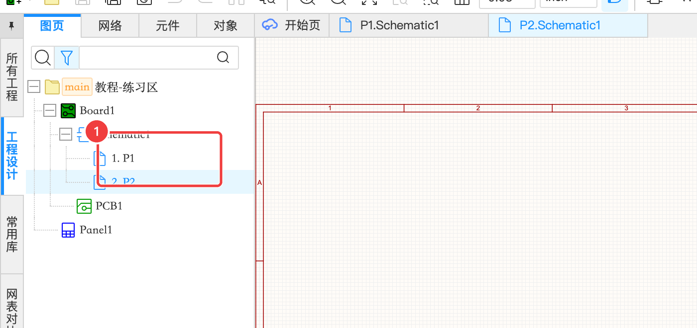
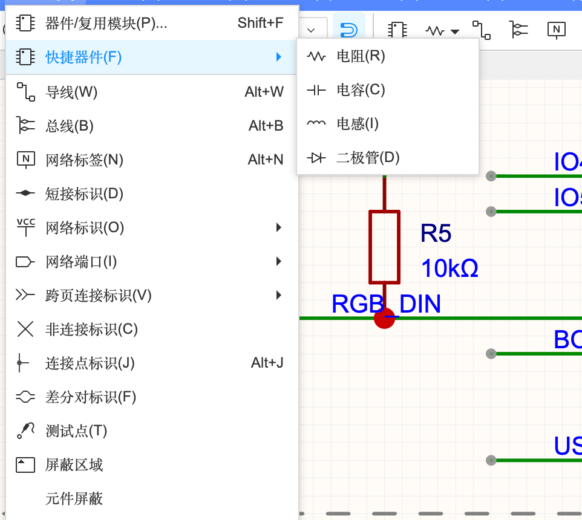
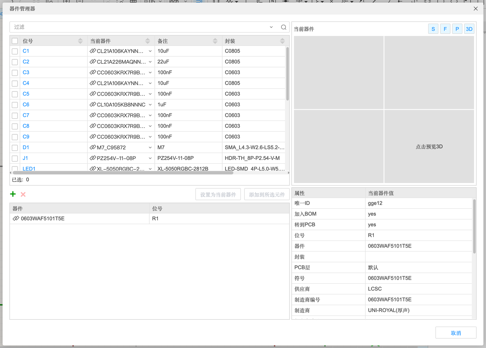
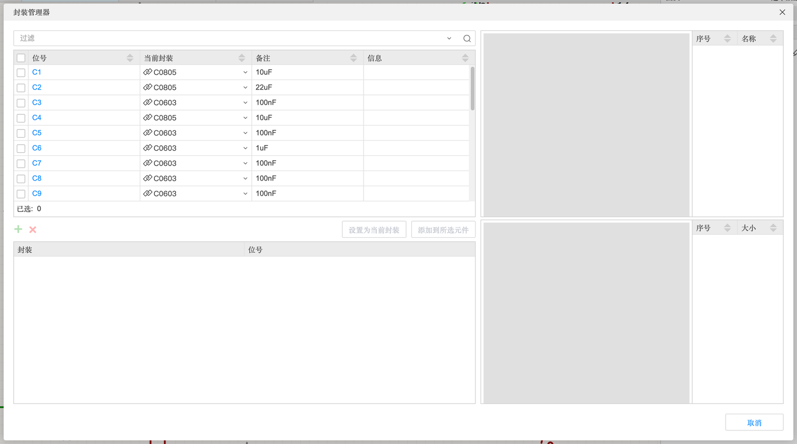

4.1 图纸与放置器件
一张原理图由“图纸”（带边框和标题栏的纸）和放在上面的元件组成。这一页讲：图纸和标题栏怎么设置、一个原理图怎么分成多张图页、放元件的几种方法、以及成批管理元件的器件管理器 / 封装管理器 / 器件标准化。
图纸与图页#
工程、原理图、图页是什么关系#
回顾一下工程树（A-1）：一个板（Board）下面有一个原理图（Schematic）和一个 PCB。一个原理图又可以有好几张图页（Page）——就像一份作业可以写好几页纸。电路简单时一页就够；电路大了，可以把“电源”“单片机”“接口”分到不同页上，每页都清清楚楚。
新建图页#
- 「文件」→「新建」→「图页」（或者在左侧工程树里右键原理图）
- 工程树里原理图下面多出一页，编号自动是 2、3……，同时打开一个新标签

图页可以在工程树里拖动排序、右键重命名或删除。不同图页之间的元件怎么连起来？靠网络端口或同名网络标签，见 4.2 和 4.4。
图纸：边框与标题栏#
在画布空白处单击（什么都不选），右侧属性面板显示的就是当前图页的图纸属性：
图纸属性（单击画布空白处后右侧面板）
| 属性 | 含义 | 建议 |
|---|---|---|
| 名称 | 图页名（P1、P2…），也就是标签栏显示的名字 | 改成“电源”“主控”之类更好找 |
| 图纸 | 用哪个图纸模板（图框）；「无图纸」就是没有边框 | 交作业、出文档时选带标题栏的 |
| 边框 · 显示 | 是否画外边框 | — |
| 明细表位置 | 标题栏（明细表）放在哪个角 | 默认右下 |
| 尺寸 / 图纸宽度 / 高度 | A4、A3… 或自定义 | 元件多就换 A3 |
| 分区起点 / X、Y 轴分区数量 | 边框上的 1、2、3… 和 A、B、C… 刻度，用来说“某元件在 B3 区” | 默认即可 |
| 刃带宽 / 颜色 | 边框刻度带的宽度和颜色 | — |
| 明细表 · 显示 | 是否显示标题栏 | — |
| @板子名称、@创建日期、@工程名称、@图页编号… | 标题栏里的“自动字段”，会自动填入对应信息；勾选后显示 | 按需勾选 |
放置器件的几种方法#
| 方法 | 怎么做 | 适合 |
|---|---|---|
| 底部「库」面板搜索 | \ 打开底部面板 →「库」→ 搜索 → 选中一行 →「放置」 | 最常用；来源选「立创商城」能看库存、价格、基础库/扩展库（A-2） |
| 器件/复用模块对话框 | 「放置」→「器件/复用模块…」，快捷键 ⇧F | 和库面板一样的搜索，弹窗形式，适合屏幕小时 |
| 快捷器件 | 「放置」→「快捷器件」→ 电阻 / 电容 / 电感 / 二极管 | 先放一个“通用”的符号把图画出来，以后再指定具体型号 |
| 常用库 | 左侧「常用库」标签 | 自己常用的元件收藏在这里，一点就放 |
| 复制已有的 | 选中 → ⌘C / ⌘V，或 ⌘D（重复到光标位置） | 同样的 10 个电阻，放一个再复制 |

放置时的小技巧#
- 器件跟着鼠标走的时候按空格旋转 90°，按 X / Y 左右 / 上下翻转
- 放置模式是“连续放置”，放完一个还能接着放，按 Esc 结束
- 放置过程中按 tab 可以先改属性（比如阻值）再放下
- 位号会自动编号（R1、R2…），最后可以用「分配位号」统一整理（4.5）
成批管理：器件管理器、封装管理器、器件标准化#
当元件多了，一个个点开属性改太慢。「工具」菜单里有三个批量工具：
器件管理器（工具 → 器件管理器…）#

器件管理器
| 区域 | 作用 | |
|---|---|---|
| 过滤框 | 输入位号或型号筛选，例如输入 R 只看电阻 | |
| 元件列表（勾选框） | 勾选一个或多个要换器件的元件 | |
| 当前器件 / 备注 / 封装 | 每个元件现在用的是什么 | 封装一栏为空就要注意了 |
| 绿色 + / 红色 × | 往下方候选列表里添加 / 删除候选器件（点 + 会打开搜索） | |
| 设置为当前器件 | 把选中的候选器件替换给选中的元件 | |
| 添加到所选元件 | 把候选器件加为“备选器件”（有多个可选型号时用） | |
| 右侧 S / F / P / 3D | 预览符号 / 封装 / 实物图 / 3D 模型 | |
| 属性 / 当前器件值 | 选中元件的全部属性 |
典型用法：把 10 个快捷电阻一次换成“0603 10kΩ 厚声 C25804”——勾选它们 → 点 + 搜到 C25804 → 选中 →「设置为当前器件」。
封装管理器（工具 → 封装管理器…，⌥F）#

和器件管理器类似，但只换封装、不换器件。用在“原理图符号对、但想换个大小”的场景，比如把 0402 电阻换成 0603 方便手焊。右下的「检查封装尺寸」可以看封装的实际尺寸。
器件标准化（工具 → 器件标准化…，或底部面板「器件标准化」）#
检查每个元件的属性是不是和立创商城的编号对得上，并给出推荐器件。用法和坑在 B-2（案例 B） 里实际演示过：
- 状态分组：待确定 / 待分配编号 / 完全匹配 / 不检查
- 每行可以「分配立创编号」，或「使用推荐器件」（会弹出替换器件对话框）
- ⚠️ 案例 B 实测：标准化换出来的器件，封装的焊盘编号和原来的不一样，导致 PCB DRC 误报。标准化之后一定要重新导入 PCB、跑一次 PCB DRC 检查。
工程库：本工程用到的所有器件#
你放到原理图里的每个器件，都会复制一份到工程库（底部库面板左侧「工程」分类）。好处是：即使系统库里的器件被修改或下架，你的工程也不受影响。如果想用系统库里的新版本覆盖，用「设计」→「更新工程库…」（4.5）。